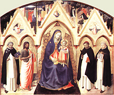

|  |
|---|
[70806] Hic est liber, pars 1 Secundum Augustinum, in IV de doctrina Christiana, eruditus eloquens ita eloqui debet ut doceat, ut delectet, ut flectat: ut doceat ignaros; ut delectet tediosos; ut flectat tardos. Haec tria completissime sacrae Scripturae eloquium. Docet enim firmiter aeterna sua veritate, Psalm.: in aeternum, domine, permanet verbum tuum. Delectat suaviter sua utilitate, Psalm.: quam dulcia faucibus meis eloquia tua. Flectit efficaciter sua auctoritate, Ier. XXIII: nunquid non verba mea sunt quasi ignis, dicit dominus? Et ideo sacra Scriptura in verbo proposito commendatur a tribus: primo ab auctoritate qua flectit, cum dicit: hic est liber mandatorum Dei. Secundo, ab aeterna veritate qua instruit, cum dicit: et lex quae est in aeternum. Tertio, ab utilitate qua allicit, cum dicit: omnes qui tenent eam pervenient ad vitam. Auctoritas autem huius Scripturae ex tribus ostenditur efficax. Primo ex origine; quia Deus origo eius est. Unde dicit: mandatorum Dei; Baruch III: hic adinvenit omnem viam disciplinae; Hebr. II: quae cum initium accepisset enarrari per dominum, ab eis qui audierunt, in nos confirmata est. Cui quidem auctori infallibiliter credendum est; tum propter naturae suae conditionem, quia veritas est, Ioan. XIV: ego sum via, veritas et vita; tum propter scientiae plenitudinem, Rom. XI: o altitudo divitiarum sapientiae et scientiae Dei; tum propter verborum virtutem, Hebr. IV: vivus est sermo Dei et efficax, et penetrabilior omni gladio ancipiti. Secundo, ostenditur efficax ex necessitate quam scilicet imponit, Marc. ult.: qui autem non crediderit condemnabitur, et cetera. Unde per modum praecepti veritas sacrae Scripturae proponitur; unde dicit: mandatorum Dei. Quae quidem mandata intellectum per fidem dirigunt, Ioan. XIV: creditis in Deum et in me credite; per dilectionem affectum informant, Ioan. XV: hoc est praeceptum meum ut diligatis invicem, sicut dilexi vos; quod ad actum et executionem inducunt: hoc fac, et vives. Tertio, ostenditur efficax ex dictorum uniformitate, quia omnes qui sacram doctrinam tradiderunt, idem docuerunt, I Cor. XV: sive autem ego, sive illi sic praedicamus, et sic credidistis. Et hoc necesse est quia omnes habuerunt unum magistrum, Matth. XXIII: unus est magister vester, etc.; unum habuerunt spiritum, II Cor. XII: nonne eodem spiritu ambulavimus? Unum insuper affectum, Act. IV: multitudinis credentium una erat anima et cor unum in Deo. Et ideo in signum uniformitatis doctrinae dicitur singulariter: hic est liber. Veritas Scripturae huius doctrinae est immutabilis et aeterna. Unde sequitur: et lex quae est in aeternum. Luc. XXI: caelum et terra transibunt; verba autem mea non transibunt. Permanet autem in aeternum haec lex propter tria: primo, propter legislatoris potestatem, Isa. XIV: Deus exercituum decrevit, et quis poterit infirmare? Secundo, propter eius immutabilitatem, Malach. III: ego Deus et non mutor. Num. XXIII: non est dominus quasi homo ut mentiatur; nec ut filius hominis ut mutetur. Tertio, propter legis veritatem, Psal.: omnia mandata tua veritas. Prov. XII: labium veritatis firmum erit in perpetuum. III Esdr. IV: veritas manet et invalescit in aeternum. Utilitas autem huius Scripturae est maxima, Isai. XLVIII: ego dominus Deus tuus docens te utilia. Unde sequitur: omnes qui tenent eam pervenient ad vitam; quae quidem triplex est. Prima est vita gratiae, ad quam sacra Scriptura disponit, Ioan. VI: verba quae ego locutus sum vobis, spiritus et vita sunt. Per hanc enim vitam spiritus Deo vivit, Gal. II: vivo autem, iam non ego: vivit vero in me Christus. Secunda est vita iustitiae in operibus consistens, ad quam sacra Scriptura dirigit, Psal.: in aeternum non obliviscar iustificationes tuas; quia in eis vivificasti me. Tertia est vita gloriae, quam sacra Scriptura promittit et ad eam perducit, Ioan. VI: domine, ad quem ibimus? Verba vitae aeternae habes. Eodem, XX: haec autem scripta sunt ut credatis; et ut credentes vitam habeatis in nomine ipsius.
[70808] Hic est liber, pars 2 Ad hanc autem vitam sacra Scriptura perducit dupliciter: scilicet, praecipiendo et adiuvando. Praecipiendo per mandata quae proponit, quod pertinet ad vetus testamentum, Eccli. XXIV: legem mandavit nobis Moyses. Adiuvando autem per donum gratiae quod legislator largitur, quod pertinet ad novum testamentum. Ioan. I: lex per Moysen data est, gratia et veritas per Iesum Christum facta est. Unde tota sacra Scriptura in duas partes principaliter dividitur, scilicet, in vetus et novum testamentum; quae duo tanguntur Matth. XIII: omnis Scriba doctus in regno caelorum similis est ei qui profert de thesauro suo nova et vetera. Et Cant. VII: omnia poma, nova et vetera, dilecte mi, servavi tibi. Vetus autem testamentum dividitur secundum doctrinam mandatorum, est enim duplex mandatum, scilicet coactorium et monitorium. Coactorium est mandatum regis qui potest transgressores punire, Prov. XX: sicut rugitus leonis, ita et terror regis. Sed monitorium est praeceptum patris qui habet erudire, Eccli. VII: filii tibi sunt? Erudi illos. Praeceptum autem regis est duplex, scilicet unum, quo legem statuit; aliud quod ad observantiam statutae legis inducit, quod consuevit per suos praecones et nuntios promulgare. Et sic distinguuntur tria praecepta, scilicet regis, praeconis et patris. Et secundum haec tria vetus testamentum dividitur in tres partes, secundum Hieronymum in prologo libri regum. Prima pars continetur in lege, quae est quasi praeceptum ab ipso rege propositum, Isai. XXXIII: dominus rex noster, dominus legifer noster. Secunda continetur in prophetis, qui fuerunt quasi nuntii et praecones Dei ex persona Dei populo loquentes et ad observantiam legis inducentes, Aggaei I: dixit Aggaeus, de nuntiis domini. Tertia continetur in Agiographis, qui spiritu sancto inspirati locuti sunt non tamen ex parte domini, sed quasi ex se ipsis. Unde Agiographi dicuntur quasi sacri scriptores, vel quasi sacra scribentes, ab agios quod est sacrum et graphia quod est Scriptura: et sic praecepta quae in eis continentur sunt quasi paterna. Ut patet Prov. VI: fili mi, custodi praecepta patris tui, et cetera. Ponit tamen Hieronymus quartum librorum ordinem, scilicet, apocryphos: et dicuntur apocryphi ab apo, quod est valde et cryphon, quod est obscurum, quia de eorum sententiis vel auctoribus dubitatur. Ecclesia vero Catholica quosdam libros recepit in numero sanctarum Scripturarum, de quorum sententiis non dubitatur, sed de auctoribus. Non quod nesciatur qui fuerint illorum librorum auctores, sed quia homines illi non fuerunt notae auctoritatis. Unde ex auctoritate auctorum robur non habent, sed magis ex Ecclesiae receptione. Quia tamen idem modus loquendi in eis et in Agiographis observatur, ideo simul cum eis computentur ad praesens. Prima autem pars, quae legem continet, in duas partes dividitur; secundum quod duplex est lex, scilicet, publica et privata. Privata lex est quae uni personae vel familiae imponitur observanda. Et talis lex in Genesi continetur, ut patet de primo praecepto homini dato, Gen. II 17: de ligno scientiae boni et mali ne comedas; et Noe, Gen. IX 4: carnem cum sanguine non comedetis; et Abrahae: Gen. XVII 9: custodies pactum meum et semen tuum post te in generationibus suis. Lex autem publica est quae populo traditur. Lex enim divina populo Iudaeorum tradita est per mediatorem, quia non erat idoneus populus ut immediate a Deo susciperet, Deut. V, unde: ego sequester fui et medius inter vos et dominum. Gal. III: lex ordinata est per Angelos in manu mediatoris. Et ideo in legislatione duplex gradus attenditur. Unus quo lex a domino ad mediatorem pervenit, et hoc pertinet ad tres libros, scilicet: Exodum, Leviticum, numeros. Unde frequenter in illis libris legitur: locutus est Deus ad Moysen. Secundus gradus est quo lex per mediatorem populo exponitur; et hoc pertinet ad Deuteronomium, ut patet ex hoc quod in eius principio dicitur: locutus est Moyses, et cetera. Tres autem libri praedicti distinguuntur secundum tria in quibus oportebat populum ordinari: primo in praeceptis quantum ad iudicii aequitatem, et hoc fit in Exodo; secundo in sacramentis quantum ad cultus exhibitionem, et hoc fit in Levitico; tertio in officiis, quantum ad rei publicae administrationem, et hoc fit in libro numerorum. Secunda autem pars, quae est prophetarum, dividitur in duas partes, secundum quod nuntius duo debet facere. Debet enim exponere regis beneficium ut inclinentur homines ad obediendum; et debet proponere legis edictum. Triplex autem beneficium divinum prophetae populo exposuerunt: primo haereditatis consecutionem, et hoc in Iosue, de quo Eccli. XLVI: fortis in bello Iosue; secundo hostium destructionem, et hoc in libro Iudicum, de quorum destructione in Psalmo: fiat illis sicut Madian et Sisarae; tertio populi exaltationem; quae quidem est duplex, scilicet: privata unius personae, et de hoc in Ruth; et publica quae est totius populi, usque ad regiam dignitatem, et de hoc in libro regum: quod beneficium Deus improperat eis Ezech. XVI: decora facta es vehementer. Hi enim libri, secundum Hieronymum in ordine prophetarum ponuntur. In aliis autem libris qui communiter prophetarum dicuntur, prophetae posuerunt divina edicta ad legis observationem. Et hoc dicitur, primo in communi; et hoc in prophetis maioribus qui ad totum populum mittebantur et ad totius legis observantiam inducebant; secundo in particulari; et hoc in prophetis minoribus, quorum diversi, propter diversa ad speciales gentes mittebantur, sicut Osee ad decem tribus; Ioel ad senes Israel; Ionas ad Ninivitas; et sic de aliis. Prophetae autem maiores dividuntur secundum ea quibus ad observantiam legis prophetae populum induxerunt: scilicet blandiendo per promissiones beneficiorum; terrendo per comminationem paenarum; arguendo per vituperationes peccatorum. Quamvis haec tria in singulis prophetarum inveniantur, tamen Isaias principaliter blanditur; de quo dicitur Eccli. XLVIII: consolatus est lugentes in Sion; Ieremias vero comminatur, unde dicebat: de industria dissolvit manus virorum bellantium Ier. XXXVIII; sed Ezechiel arguit et vituperat, Ezech. XVI: pater tuus Amorrhaeus et mater tua Cethaea. Potest tamen aliter distingui, ut dicatur quod Isaias praenunciat principaliter incarnationis mysterium, unde tempore adventus in Ecclesia legitur; Ieremias vero mysterium passionis, unde legitur tempore passionis; Ezechiel mysterium resurrectionis, unde in resurrectione ossium et templi reparatione librum suum finit; Daniel autem secundum quod inter prophetas computatur ex hoc quod spiritu prophetico praedixit futura, quamvis non ex persona domini populo loqueretur, prosequitur de divinitate Christi, ut quatuor prophetae quatuor Evangelistis respondeant, vel etiam de advocatione ad iudicium. Tertia autem pars, quae continet Agiographos et apocryphos libros, in duo distinguitur, secundum duo quibus patres instruunt filios ad virtutem, scilicet verbo et facto; quia exempla in moralibus non minus valent quam verba. Quaedam autem instruunt facto tantum; quaedam verbo tantum; quaedam verbo et facto. Facto autem dupliciter. Uno modo instruendo de futuro ad cautelam; et hoc est in Iosue, quem Hieronymus inter Agiographos ponit. Quamvis enim propheta ex dono prophetiae esset, non tamen ex officio; quia non fuit a domino missus ad prophetandum populo. Unde quod Sap. VIII dicitur, de eo intelligi potest: signa et monstra scit antequam fiant. Alio modo narrando ad exemplum virtutis praeterita. Virtutes autem principales sunt quattuor, scilicet: iustitia, qua est bonum commune, cuius exemplum ponitur in Paralipomenis, in quo totius populi status describitur qui per iustitiam gubernatur. Secunda est temperantia, cuius exemplum ponitur in Iudith; unde Hieronymus: accipite Iudith viduam castitatis exemplum. Iudith XV: fecisti viriliter eo quod castitatem amaveris. Tertia est fortitudo, cui duo competunt, scilicet, aggredi; et quantum ad hoc ponitur exemplum in libro Machabaeorum; et sustinere et quantum ad hoc ponitur exemplum in Thobia, Thob. II: hanc autem tentationem ideo permisit dominus evenire illi, ut posteris daretur exemplum patientiae eius. Quarta est prudentia, cuius est obviare insidiis; et quantum ad hoc ponitur exemplum eius in Esdra. In illo enim libro ostenditur quomodo Esdras et Neemias et alii principes prudenter caverunt insidias inimicorum volentium impedire aedificationem templi et civitatis. Est etiam prudentiae sagaciter repellere violentias; et quantum ad hoc datur eius exemplum in libro Hester: ubi ostenditur quomodo Mardocheus et Hester Aman potentissimi fraudes eliserunt. Libri autem Agiographi et apocryphi, qui tantum instruunt verbo, distinguuntur secundum quod verbum dupliciter ad instructionem operatur: uno modo petendo sapientiae donum, Sap. VII: optavi et datus est mihi sensus, invocavi et venit in me spiritus sapientiae. Et ad instructionem operatur Psalterium, per modum orationis Deo loquens. Secundo modo sapientiam docendo, et hoc dupliciter, secundum duplex opus sapientis; quorum unum est mentientem manifestare posse: et quantum ad hoc est liber Iob, qui per modum disputationis errores elidit, Iob XIII: disputare cum Deo cupio prius vos ostendens fabricatores mendacii et cultores perversorum dogmatum. Aliud opus eius est non mentiri de quibus novit; et sic dupliciter instruimur: quia vel commendatur nobis sapientia, et hoc in libro sapientiae; vel sapientiae praecepta proponuntur, et hoc in tribus libris Salomonis: qui quidem distinguuntur secundum tres gradus virtutum quos Plotinus distinguit; quia praecepta sapientiae non nisi de actibus virtutum esse debent. In primo gradu, secundum eum, sunt virtutes politicae, quibus homo moderate rebus mundi utitur et inter homines conversatur; et secundum hoc est liber proverbiorum. In secundo gradu sunt virtutes purgatoriae, quibus homo se a rebus mundi exuit per contemptum; et secundum hoc est Ecclesiastes qui ad contemptum mundi ordinatur, ut patet per Hieronymum in prologo. In tertio gradu sunt virtutes purgati animi, quibus homo, saeculi curis penitus calcatis, in sola sapientiae contemplatione delectatur; et quantum ad hoc sunt cantica. In quarto autem gradu sunt virtutes exemplares in Deo existentes, de quibus praecepta sapientiae non dantur, sed magis derivantur ab eis. Verbo autem simul et facto instruit Ecclesiasticus. Unde praecepta sapientiae qui proposuit, in laude patrum librum suum terminavit, ut patet a XLIV capitulo et deinceps. Novum autem testamentum, quod ad vitam aeternam ordinat, non solum per praecepta, sed per gratiae dona, dividitur in tres partes. In prima agitur de gratiae origine: et hoc in Evangeliis. In secunda de gratiae virtute: et hoc in epistolis Pauli; unde in principio a virtute Evangelii incipit dicens: virtus Dei est in salutem omni credenti. Rom. I. In tertia agitur de virtutis praedictae executione: et hoc in reliquis libris novi testamenti. Origo autem gratiae Christus est, Ioan. I: de plenitudine eius omnes accepimus, gratiam pro gratia, quia lex per Moysen data est, gratia et veritas per Iesum Christum facta est. In Christo autem est considerare duplicem naturam, scilicet: divinam: et de hoc est principaliter Evangelium Ioannis, unde incipit: in principio erat verbum et verbum erat apud Deum, et Deus erat verbum; et humanam: et de hac principaliter tractant alii Evangelistae, qui distinguuntur secundum tres dignitates, quae Christo homini competunt. De ipso enim quantum ad dignitatem regiam determinat Matthaeus; unde in principio sui Evangelii eum secundum carnem a regibus descendisse ostendit et a magis regibus adoratum. Sed quantum ad dignitatem propheticam determinat de eo Marcus; unde a praedicatione eius Evangelium incipit. Quantum vero ad sacerdotalem dignitatem determinat de eo Lucas; unde a templo incipit et a sacerdotio, et in templo finit Evangelium, et frequenter circa templum versatur, ut dicit quaedam Glossa Luc. II super illud: invenerunt eum in templo sedentem in medio doctorum. Vel aliter, ut dicatur quod Matthaeus determinat de Christo principaliter quantum ad mysterium incarnationis; et ideo in figura hominis describitur; Lucas quantum ad mysterium passionis; et ideo describitur in figura bovis, quod est animal immolatitium; Marcus vero quantum ad victoriam resurrectionis; et ideo describitur in figura leonis; Iohannes vero, qui ad alta divinitatis eius volat, per aquilam designatur. Executio autem virtutis gratiae ostenditur in progressu Ecclesiae, in quo est tria considerare. Primo Ecclesiae initium; et de hoc agitur in actibus apostolorum; unde dicit Hieronymus: actus apostolorum nudam videntur sonare historiam et nascentis Ecclesiae infantiam texere. Secundo Ecclesiae profectum; et ad hunc ordinatur instructio apostolica in epistolis canonicis. Tertio Ecclesiae terminum; in quo totius sacrae Scripturae continentiam Apocalypsis concludit, quousque sponsa in thalamum Iesu Christi ad vitam gloriosam participandam; ad quam nos perducat ipse Iesus Christus, benedictus in saecula saeculorum. Amen.